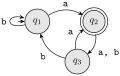

This assignment covers 2.1 and 2.2 in HMU. Each problem will be worth 3 checks. Your answers should be like little essays, made only of complete sentences. Formulas should never stand on their own, but should be parts of otherwise complete sentences. You should be able to read your answer aloud from beginning to end and have it sound sensible. If your solution is more like a pile of equations, with little or no connecting narration, you’ll max out at 2 checks.
ExercisesExercises
1.
The following are the transition diagrams of two DFA \(M_1\) and \(M_2\text{.}\) Answer the following questions about each one.
What is the start state?
What is the set of accepting states?
What sequence of states does the machine go through on input aabb?
Does the machine accept the string aabb?
Does the machine accept the string \(\epsilon\text{?}\)
Figure4.1.1.\(M_1.\)
Figure4.1.2.\(M_2\text{.}\)
2.
Translate the transition diagram in Figure 4.1.2 into a formal specification. Carefully list all of the components (\(Q\text{,}\)\(\Sigma\text{,}\) etc.).
3.
The transition function of a DFA \(M\) is given by the following table. Use the table to give a transition diagram for this machine.
NOTE. This problem was updated. Make sure you inspect the table carefully.
\({\tt u}\)
\({\tt d}\)
\(\to \ast q_1\)
\(q_1\)
\(q_2\)
\(\ast q_2\)
\(q_1\)
\(q_3\)
\(q_3\)
\(q_2\)
\(q_4\)
\(q_4\)
\(q_3\)
\(q_5\)
\(q_5\)
\(q_4\)
\(q_5\)
4.
If \(L\) is a language (a subset of \(\aster{\Sigma}\)) then its complement is the language
\begin{equation*}
\aster{\Sigma} - L = \{ x \in \aster{\Sigma} : x \notin L \}\text{.}
\end{equation*}
Show that if \(M\) is a DFA that accepts language \(B\text{,}\) then swapping the accept and nonaccept states in \(M\) yields a DFA that accepts \(\aster{\Sigma} - B\text{.}\)
Hint.
Start by supposing (your hypothesis) that a DFA \(M\) has been given, and it accepts \(B\text{.}\) That is to say, suppose \(M\) is a DFA such that \(L(M) = B\text{.}\) Use this assumption and what you have learned about DFA to argue persuasively and in detail that when the states are swapped, the resulting machine accepts all words not in \(B\) and rejects all words in \(B\text{.}\) Since you don’t have a transition diagram to fall back on, you’ll need to use the formal description of the DFA in terms of sets and functions.
An earlier version of this Hint said that this isn’t an induction proof. That was a little overeager. It is very possible to give a persuasive proof that doesn’t use it, but I shouldn’t have said you can’t. In this particular case, though, I don’t think the inductive argument is simpler or more convenient.
5.
For any word \(w = a_1 a_2 \ldots a_n\text{,}\) its reverse \(w^R\) is defined to be
so the symbols appear in the reverse order. Recall that a language is regular if it is accepted by some DFA. Show that if \(B\) is a regular language, so is the language \(B^R\text{,}\) where
\begin{equation*}
B^R = \{ w^R : w \in B \}\text{.}
\end{equation*}
Hint.
In the previous problem, a modification to the DFA was suggested: swap the accepting and non-accepting states. In this one, you will need to concoct the modification yourself, and give some of the details of why the resulting thing is a DFA.
Since you don’t have a transition diagram to fall back on, you’ll need to use the formal description of the DFA in terms of sets and functions. There are two things to prove: first, that \(B^R\) contains all words \(w^R\) where \(w \in B\text{,}\) and second, that \(B^R\) does not contain any word that isn’t the reverse of a word in \(B\text{.}\)